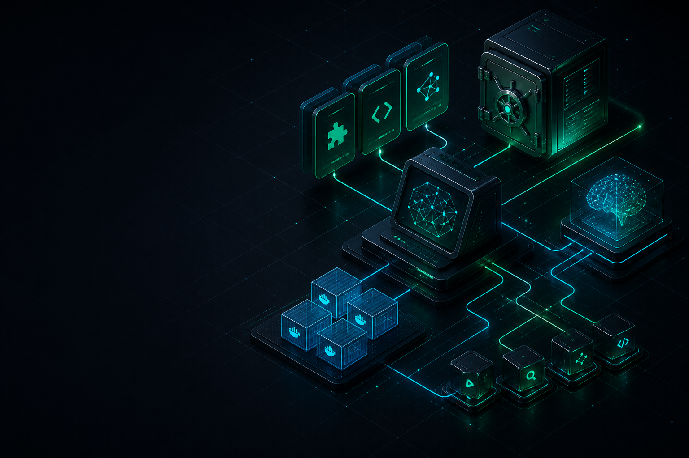
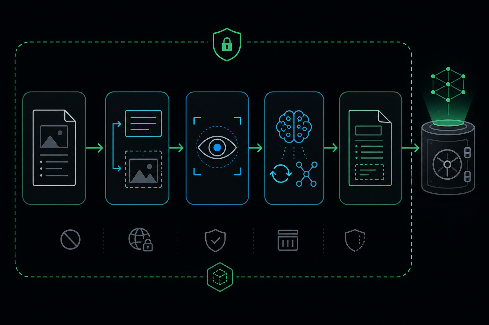

Why Now Is the Time to Build Your AI Workspace
AI is moving beyond a chat window. A personal workspace gives your agents memory, tools, repeatable workflows, and boundaries you control.

The gap between using AI and building with AI
The barrier to trying AI has disappeared. Open a chat, describe a task, and you can get a useful answer in seconds.
The barrier to doing reliable work with AI is different. The work becomes harder when your projects span days or months, when a coding agent needs the decisions from last week, when a research result should become reusable knowledge, or when you need the same workflow to work from another machine.
Without a workspace, the usual pattern is familiar:
- every new session starts with a re-explanation
- useful prompts are copied between chat windows
- project context is scattered across terminals, bookmarks, and notes
- tool setup becomes tied to one IDE or one machine
- good process lives in your head instead of in a system
That is why this is the right time to build an AI workspace. Agents are becoming capable enough to edit code, browse documentation, call tools, and work across a repository. They need more than a prompt. They need context, boundaries, and a repeatable way to operate.
An AI workspace is a small operating environment around the model. It gives your tools a home and gives your future sessions a starting point.
What an AI workspace changes
The workspace described here is built around six decisions:
- You own the context. Keep project decisions, notes, and workflows in plain files instead of a vendor-specific chat history.
- You can change tools without losing the system. A portable folder works with different IDEs, coding agents, and Linux machines.
- Local-first when data is sensitive. Keep raw work material and operational data on local tools whenever practical.
- A Markdown vault is the system of record. Durable knowledge should survive a terminal, an IDE, and a model change.
- Skills are playbooks. Repeatable procedures belong in compact instructions, not in a growing pile of prompts.
- Containers isolate heavyweight tooling. OCR, report rendering, and research tooling should not permanently pollute the host.
- Publish the blueprint, not the brain. Share architecture and templates; keep private notes, keys, telemetry, and infrastructure details out of public repositories.
Architecture at a glance
flowchart TB agents["AI Agents\nCursor, CLI agents, coding agents"] skills["Reusable Skills\nMemory, research, OCR, documents, engineering"] mcp["MCP Tools\nSearch, documentation, browser, GitHub"] vault["Obsidian Vault\nProjects, areas, resources, archive"] local["Local Inference\nOllama chat, vision, translation, reasoning"] containers["Docker Sandboxes\nOCR, reports, research, code analysis"] agents --> skills agents --> mcp skills --> vault skills --> local skills --> containers mcp --> vault
Each layer has one job:
| Layer | Job |
|---|---|
| Agents | Decide, edit code, run commands |
| Skills | Teach repeatable procedures |
| MCP | Expose search, docs, and external tools |
| Vault | Store durable knowledge |
| Ollama | Provide private model capacity |
| Containers | Isolate messy dependencies |
Think of the workspace as an operating environment, not a bigger chat window.
Memory: give the agent a place to come back to
I use an Obsidian vault organized with the PARA method:
- Projects active builds and research goals
- Areas ongoing domains such as blue team, Linux, AI agents
- Resources cheatsheets, tool guides, references
- Archive finished or inactive material
Every durable note carries enough metadata to stand on its own: created, updated, type, status, and tags. This makes notes useful to people and searchable by tools.
For example:
---
created: YYYY-MM-DD
updated: YYYY-MM-DD
type: reference
status: active
tags:
- area/ai/agents
- resource/tool
---
The key habit is simple: search memory before inventing context. A local search layer can retrieve relevant prior decisions before an agent starts scanning the whole filesystem or proposing a new design.
This is context engineering in practice: the quality of an agent’s answer depends on the quality, relevance, and boundaries of the information it receives.
Local models: assign roles, not hype
Local models through Ollama let the workspace keep selected workloads close to the machine. The goal is not to replace every cloud model. It is to choose the right boundary for each task.
| Role | Example use |
|---|---|
| General chat / coding assist | Day-to-day reasoning inside the workspace |
| Vision OCR | Extract text and describe figures from scanned PDFs |
| Translation | Convert document language while keeping structure |
| Deep reasoning | Summarize long findings after OCR or research |
For security work, the model-selection policy is more important than any specific model name:
- Keep raw SIEM alerts, malware notes, and homelab details local when possible.
- Sanitize before sending content to an external service; redact IPs, usernames, tokens, hostnames, and client data.
- Treat models as interchangeable components. The role matrix is the durable design.
MCP: connect agents to capabilities
Model Context Protocol gives agents a standard way to use tools rather than embedding every integration into a custom prompt.
The practical categories are modest:
| Category | Why it helps |
|---|---|
| Local vault / note search | Retrieve prior decisions before rewriting them |
| Documentation lookup | Pull library and framework docs on demand |
| Browser automation | Verify pages and capture UI state |
| GitHub | Issues, PRs, and repo operations from the agent |
There is an operational rule here: keep API keys in environment variables or a dedicated secret manager. Never hardcode them into a committed MCP configuration file.
Sandboxes: OCR is the clearest example
OCR is a good test of whether a workspace design is practical. PDFs often contain mixed text, screenshots, scanned pages, and tables. The dependency chain can be heavy; it should not become permanent clutter in the host environment.
My pipeline follows this shape:
- Host launcher script starts a dedicated container
- Container extracts page text and embedded images
- Vision models analyze selected figures
- Optional translation and reasoning passes produce clean Markdown
- Results land back in the workspace for vault ingestion

The host only needs a small launcher:
#!/usr/bin/env bash
set -euo pipefail
IMAGE_NAME="ocr-sandbox"
if ! docker image inspect "$IMAGE_NAME" >/dev/null 2>&1; then
docker build -t "$IMAGE_NAME" -f docker/ocr/Dockerfile docker/ocr/
fi
docker run --rm --net=host \
-v "$(pwd)":/workspace -w /workspace \
"$IMAGE_NAME" "$@"
Training PDFs, certificates, threat reports, and lab writeups can then become Markdown that is searchable, linkable, and reusable — without making the host Python environment a long-term dependency graveyard.
The same boundary works for:
- PDF / DOCX report compilation
- Multi-platform research retrieval
- Code dependency graph generation
Skills: turn good practice into a repeatable interface
The workspace does not rely on one mega-prompt. It uses small skills grouped by job:
| Skill group | Purpose |
|---|---|
| Vault / memory | Note formatting, daily logs, reference linking |
| Research | Web and docs retrieval, synthesis |
| Documents | OCR, PDF/DOCX compilation |
| Engineering | Code audit, UI systems, dependency mapping |
Examples of the modules I use:
| Module | What it contributes |
|---|---|
obsidian-mind |
Local vault search and durable-workflow conventions |
vault-logger |
Session and change logging into the knowledge base |
searcher |
Multi-source research across docs, GitHub, and the web |
ocr-pipeline |
Containerized document OCR with local model roles |
graphify |
Dependency analysis and code relationship mapping |
ui-ux-orchestrator |
Design, accessibility, and frontend execution workflow |
superpowers |
Static audit, verification, and code-quality workflow |
A good skill is short, explicit, and points to a script or tool. It tells an agent how to approach a task, what to verify, and where durable output belongs. Agents should load the relevant playbook when a task matches; they do not need a full private operating manual.
A root contract keeps agents aligned
Every agent should start with a short root-level contract:
# Workspace Contract
- Memory lives in the Obsidian vault under PARA folders
- Skills live under .cursor/skills and .agents/skills
- Heavy tools run through scripts/ and Docker sandboxes
- Never commit API keys, tokens, or private vault dumps
- Prefer updating existing notes over creating duplicates
That file is the handshake for Cursor, Claude Code, OpenCode, Gemini CLI, or any other agent that enters the folder. It makes the workspace behavior explicit instead of relying on a model to guess.
A minimal starter recipe
You do not need a large system to adopt the pattern:
# 1. Create a portable workspace root
mkdir -p ~/AI/my-agentic-workspace/{.cursor/skills,.agents/skills,docker/ocr,scripts,docs}
# 2. Install Ollama and pull at least one general + one vision model
# Follow current Ollama docs for your distro
# 3. Create an Obsidian vault beside or inside the workspace
# Add PARA folders and a daily-notes path
# 4. Add one skill folder with a SKILL.md describing a real workflow
# 5. Add one Dockerized tool with a host launcher script under scripts/
# 6. Add a root contract file agents can read on session start
Before adding more tools, verify the loop:
- the agent can find the contract file
- one skill loads correctly
- one sandboxed tool runs
- a new note lands in the vault with frontmatter
What stays private
- Personal vault dumps
- API tokens, GitHub PATs, Cloudflare keys
- Homelab IPs and tunnel hostnames
- Raw SOC telemetry or malware samples
- Full private agent profiles with internal ops details
Share the blueprint. Keep the living memory private.
Learn more
- IBM: What Is Context Engineering? Why It Matters for AI Agents — the IBM video and playlist that helped frame this as context engineering rather than prompt collection.
- IBM: Build Context-Aware AI Agents with BeeAI — a practical context-pipeline walkthrough.
- Obsidian — local Markdown knowledge management.
- Ollama — local model runtime.
- Docker documentation container fundamentals.
- Model Context Protocol standard tool connectivity for agents.
Closing
An agentic workspace is not a bigger prompt. It is an operating environment with memory that survives sessions, local models for private work, skills that encode procedure, and sandboxes that keep the host clean.
Build that foundation once, and future agent sessions start with context instead of amnesia.